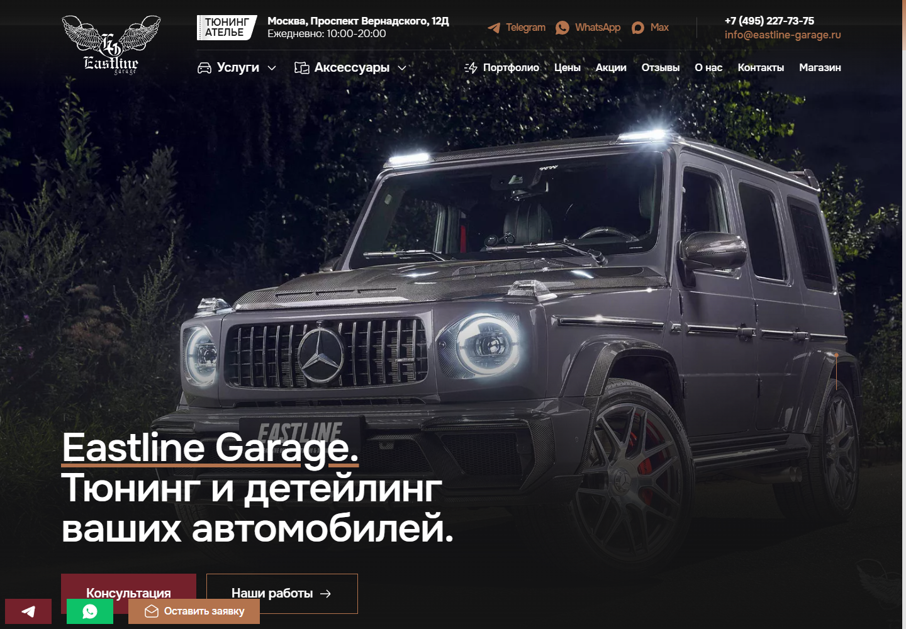
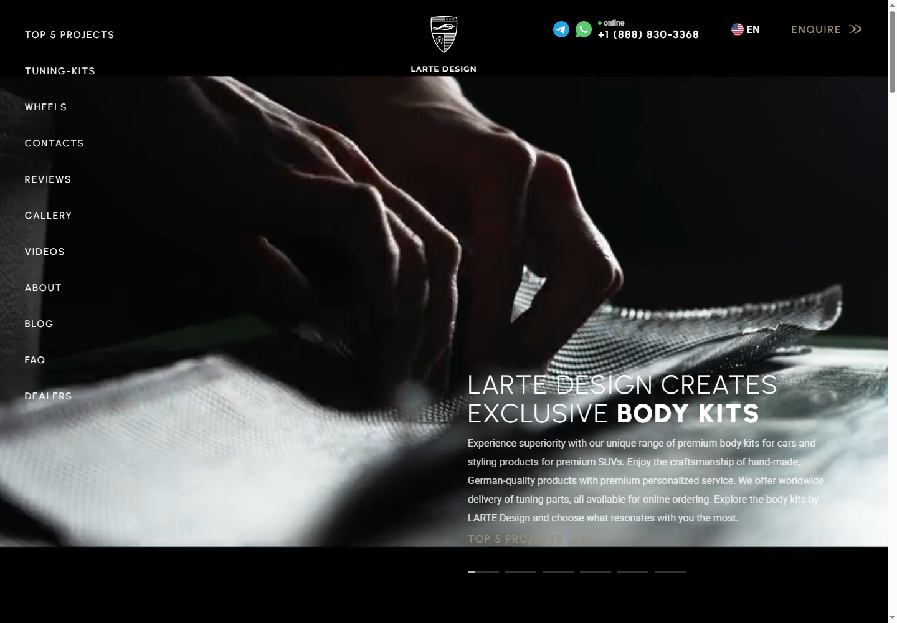
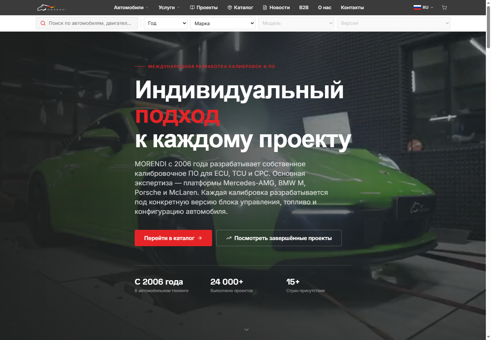

Референс 1Eastline Garage
Шапка и большой кадр
Логотип отдельно от меню, телефон и мессенджеры справа. Фотография работает на всю ширину.
Для 7.62 оставим только нужные пункты меню и подтверждённые контакты.
Новый выбор для Ильи. Сначала определяем характер, затем собираем главный экран и остальные блоки в одном стиле.
Чёрный и графит, светлый текст, красный акцент
Можно выбрать одно направление или совместить приёмы двух. Снимок открывается крупно, название ведёт на живой сайт.

Логотип отдельно от меню, телефон и мессенджеры справа. Фотография работает на всю ширину.
Для 7.62 оставим только нужные пункты меню и подтверждённые контакты.

Крупный автомобильный образ, свободная композиция и переходы между большими блоками.
Берём масштаб и ритм. Услуги Ильи покажем своим содержанием, без чужих автомобилей и обещаний.

Крупная типографика, красный акцент и понятное разделение направлений работы.
Для небольшого сервиса уберём каталог моделей, лишние уровни меню и рекламные цифры.
Одинаковые слова для честного сравнения. Все образцы набраны живым текстом. Проверьте «Услуги», крупный заголовок и цифры.
Технический характер. Чёткие углы и широкие формы
Проверьте форму букв и расстояния между ними. Обычный текст останется спокойным и читаемым.
Лицензия OFLСобранная геометрия. Плотный, спокойный, хорошо читается
Проверьте форму букв и расстояния между ними. Обычный текст останется спокойным и читаемым.
Лицензия OFLЛёгкая механика. Тоньше, свободнее, с техническим рисунком
Проверьте форму букв и расстояния между ними. Обычный текст останется спокойным и читаемым.
Лицензия OFLЖивой гротеск. Мягкие детали и уверенные заголовки
Проверьте форму букв и расстояния между ними. Обычный текст останется спокойным и читаемым.
Лицензия OFLПлакатный акцент. Очень широкий; для коротких крупных слов
Проверьте форму букв и расстояния между ними. Обычный текст останется спокойным и читаемым.
Лицензия OFLЗдесь можно изменить слова и проверить выбранный шрифт на своём заголовке. Наведите на кнопку и на слово «Услуги» в образцах выше.
Палитры, стекло, мягкие движения и 3D собраны в общей витрине. Для этого выбора показаны спокойное движение текста и кнопок, без пружин и резких скачков.